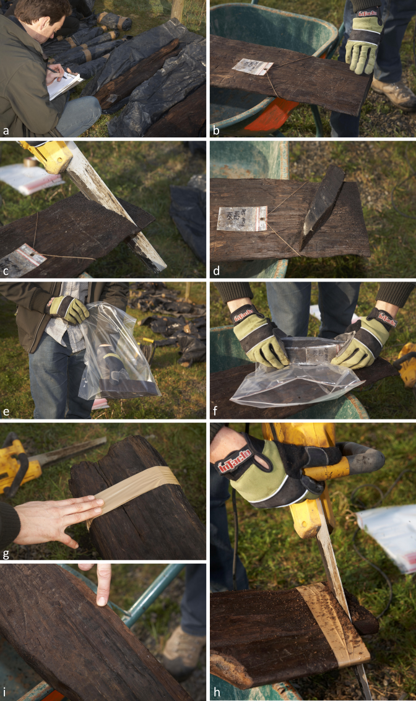
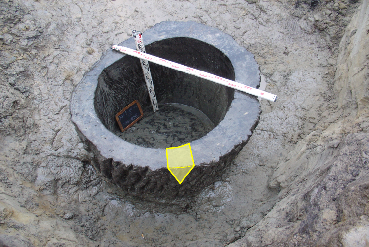
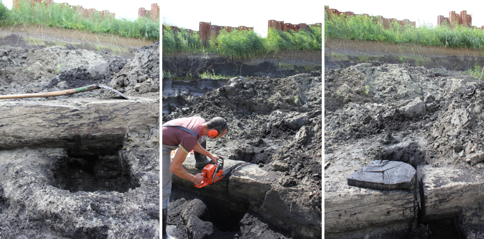
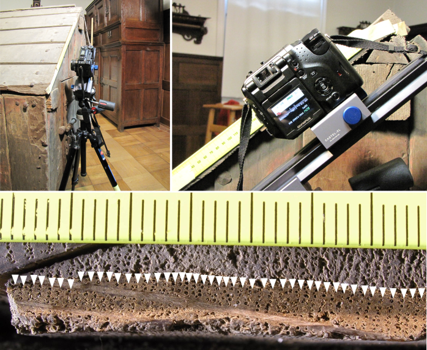
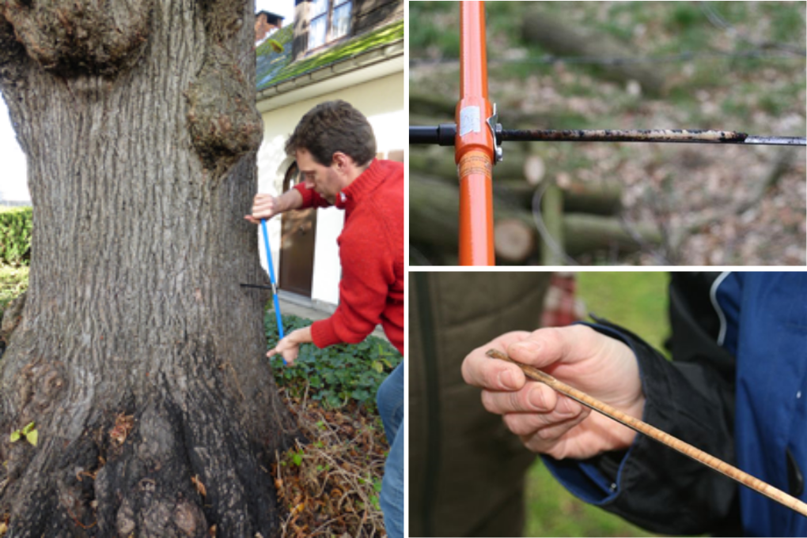
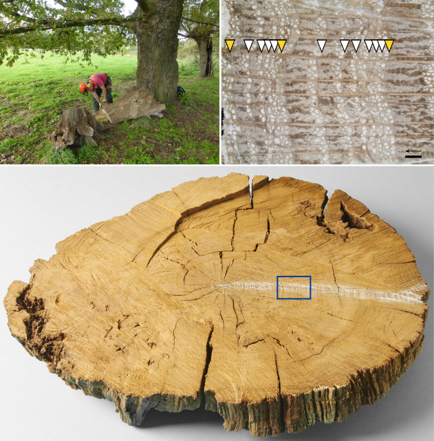
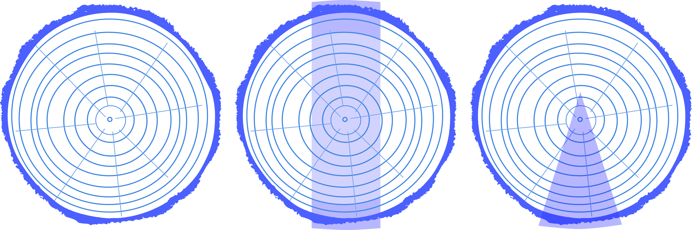
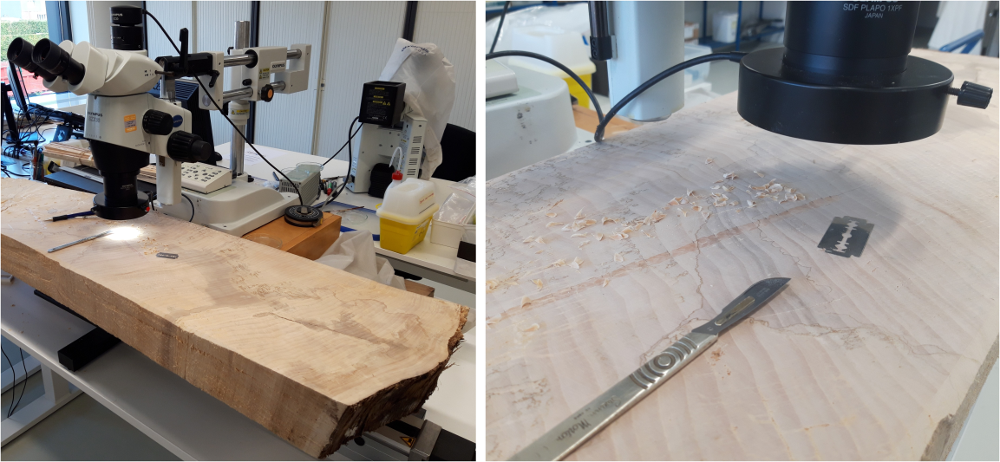

5.1 Archeologisch en subfossiel hout
Voor het bemonsteren van archeologisch of subfossiel hout wordt gebruik gemaakt van een handzaag, een elektrisch aangedreven (cirkel-)zaag of een kettingzaag. Daarmee wordt een dwarse doorsnede gemaakt van de te onderzoeken stam, paal of plank. Hieronder volgen enkele vuistregels voor de selectie en bemonstering van archeologisch hout:
- zaag een dwarse doorsnede van maximaal 2 à 3 vingers dik (ca. 3-5 cm). Dat bespaart extra werk bij transport en analyse;
- besteed aandacht aan de aanwezigheid van spinthout en wankant, en zorg ervoor dat dit aan het stuk hout blijft vasthangen, eventueel door vóór het verzagen een tape aan te brengen (zie figuur @fig-staalArcheo);
- indien er barsten in het hout aanwezig zijn, wikkel dan tape of folie om het stuk hout vóór het zagen. Zo valt het staal niet uit elkaar in meerdere delen;
- vermijd het nemen van een staal ter hoogte van een takaanzet, kwast, wondweefsel of een rot stuk.
Neem een dwarse doorsnede van maximaal 3-5 cm dik. Dat bespaart extra werk bij transport en analyse.

Neem een staal van zoveel mogelijk verschillende elementen per structuur, context of bouwfase. De kans op een succesvolle datering stijgt aanzienlijk indien er meer stukken kunnen onderzocht worden. De dendrochronologische datering van een individueel stuk hout (sculptuur, boomstamgrafkist, …) is doorgaans veel problematischer dan het hout van bijvoorbeeld een waterput die is opgebouwd uit tientallen planken en palen. Zeker als het te onderzoeken hout relatief weinig groeiringen heeft per houten element, is het essentieel om zoveel mogelijk stalen te nemen.
De kans op een succesvolle datering stijgt aanzienlijk indien er meer stukken uit een zelfde structuur kunnen onderzocht worden.
Bezorg zo veel mogelijk stalen aan de expert. Die kan dan de meest geschikte stukken uitkiezen voor verdere analyse. Indien slechts een paar willekeurig gekozen stalen de expert bereiken, bestaat de kans dat een beduidend aantal stukken minder of niet geschikt wordt bevonden.
Bij een boomstamwaterput is enkel het buitenste deel van een stam bewaard. Het is aan te raden hier op meerdere plaatsen (minstens 2) een wigvormig stuk uit het bewaarde deel van de stam te zagen (fig. 5.2). Ga na of er schors aanwezig is, en zorg ervoor dat dit dan aan het hout blijft vastzitten (vooraf verstevigen met tape is aangewezen).

Subfossiele boomstammen, aangetroffen in een opgravingsvlak of -put, kunnen bemonsterd worden door een deel van de stam te ondergraven en daarna met een kettingzaag een stamschijf te zagen (zie fig. 5.3).

Scheepshout moet nauwkeurig ingetekend worden vóór een dendrochronologische staalname. De selectie van de scheepsonderdelen voor het dendrochronologisch onderzoek gebeurt in samenspraak met de maritiem-archeoloog. Het aantal te onderzoeken elementen is afhankelijk van de onderzoeksvragen (louter datering of ook herkomstbepaling, opsporen van herstellingen, …).
Bij waardevolle houten objecten of structuren, waar een conservatietraject wordt overwogen, voer je zelf geen staalname uit. Raadpleeg in dergelijke gevallen altijd een specialist. Er zijn immers omstandigheden waarbij een dendrochronologisch onderzoek mogelijk is zonder een destructieve staalname, maar na een minimale oppervlaktebehandeling of reiniging.
5.2 Bouwkundig erfgoed
De meest geschikte stalen van balken of planken uit historische gebouwen zijn dwarse doorsnedes, m.a.w. gelijkaardig aan wat beschreven is voor archeologisch en subfossiel hout (fig. 5.1 en fig. 5.3). Op een dwarse doorsnede van ca. 5 cm dik kan het groeiringpatroon zonder problemen worden opgemeten (fig. 5.4 a). Bij vervanging van historisch bouwhout kunnen dergelijke stalen makkelijk genomen worden. Zo blijft het onderzoekspotentieel van het historische bouwhout bewaard en het te bewaren volume tot een minimum beperkt.
Deze wijze van bemonsteren is echter niet altijd mogelijk of te verantwoorden omwille van de onomkeerbare destructieve impact op het gebouw. Als alternatief wordt meestal gebruik gemaakt van holle boren waarmee een cilinder van hout uit een balk kan gehaald worden (fig. 5.4). Uiteraard geldt hier eveneens de regel dat er voldoende stalen moeten genomen worden per bouwfase. Indien slechts één balk wordt bemonsterd per bouwfase, is de kans bijzonder klein dat dit tot een datering zal leiden. Zelfs indien dit lukt, zal de interpretatie van één staal dikwijls problematisch zijn. Het is daarom aan te bevelen om per geïdentificeerde bouwfase telkens minimum 5 stalen te nemen.
Indien slechts één balk wordt bemonsterd per bouwfase, is de kans bijzonder klein dat dit tot een datering zal leiden.
Essentieel is wel dat de plaats van staalname en het bemonsterde onderdeel worden geregistreerd en dat die in relatie kunnen gebracht worden met het opgemeten groeiringpatroon. Bij staalname in een historische dakkap, worden alle genomen boorkernen best aangeduid op een zogenaamd dakenplan. Dit is een schematische weergave van de dakstructuur, waarop de oriëntatie van de dakkap wordt weergegeven (noordpijl, situering binnen gebouw of t.o.v. aanpalende weg), en waarop de plaats van staalname (nummering per sporenpaar, trekbalk, …), het bemonsterde onderdeel (korbeel, stijl, dekbalk, …), eventuele telmerken (nummering op sporen, kepers of dekbalken) en handelsmerken worden aangeduid (fig. 5.4 i). Dit geldt uiteraard ook indien geen boorkernen maar dwarse doorsnedes worden ingezameld van elementen die vervangen worden tijdens een restauratiecampagne.

5.3 Panelen, sculptuur en meubilair
Bij waardevolle objecten – paneelschilderijen, houten sculpturen of meubilair – is een (semi-)destructieve staalname meestal uitgesloten. Als de groeiringen echter zichtbaar zijn op een kops vlak kan ook met digitale detailbeeld gewerkt worden. De absolute voorwaarde is wel dat alle groeiringgrenzen duidelijk van elkaar te onderscheiden zijn. Eén jaarring ‘missen’ tijdens het registreren van het jaarringpatroon betekent immers dat de analyse en datering zal falen. Dikwijls is een lichte reiniging van het kops vlak nodig (door schuren, borstelen of met behulp van lichte solventen). Pas daarna kunnen kwaliteitsvolle macro-opnames van het groeiringpatroon gemaakt worden. Dergelijke beelden kunnen aan de hand van een schaallat achteraf gekalibreerd worden, en opgemeten op scherm (fig. 5.5).

5.4 Monumentale bomen
Jaarringanalyse is de meest nauwkeurige manier om de leeftijd van een levende boom te bepalen. Indien er een duidelijke (mathematische) relatie bestaat tussen de omtrek en de leeftijd van bepaalde bomen, rekening houdend met de soort en de standplaats, kan de leeftijd worden ingeschat door de omtrek te meten. Indien een dergelijk rekenmodel niet voorhanden is, kan een boorkern (of meerdere) genomen worden uit de stam van de boom. Een holle boor (Pressler-boor) wordt dan handmatig in de stam gedraaid (fig. 5.6). Binnenin vormt zich dan een cilinder van hout (= de boorkern) waarop de groeiringen te zien zijn. Deze boorkernen hebben doorgaans een diameter van 4,3 of 5,1 mm, al bestaan er ook boren met een andere diameter.
Indien een boorkern van de schors (wankant) tot in het merg van de boom kan genomen worden, kan de leeftijd van de boom bepaald worden door simpelweg de ringen te tellen. Voorwaarde is wel dat de staalname laag op de stam wordt uitgevoerd. Indien men een boring op bijvoorbeeld 1,5 m hoogte uitvoert, dan ‘mist’ men het aantal jaar(ringen) dat de boom nodig had om 1,5 m groot te worden. Wanneer de kern van een boom echter rot is – wat bijvoorbeeld bij lindes vaak het geval is – kan het jaarringpatroon dat nog valt af te lezen op de buitenste schil enkel dienen om een (zeer) ruwe inschatting te maken van de totale leeftijd.

Bij bomen met erfgoedwaarde is de groei dikwijls door ingrijpen van de mens gestuurd, bijvoorbeeld door regelmatige snoeiwerken, schade aan de stam en takken of aanpassingen van de standplaats. Daardoor is de omtrek van een erfgoedboom geen betrouwbare parameter om de leeftijd in te schatten. Het nemen van een boorkern kan dan overwogen worden. Daarbij dient de vitaliteit van de boom zeker in overweging te worden genomen. Bij sterk verzwakte bomen wordt het nemen van een boorkern best vermeden om het aftakelingsproces niet te versnellen. Door het boren kan immers de afgrendeling van bepaalde houtzwammen in het hout doorbroken worden.
Daarnaast is het ook belangrijk om tussen twee boringen bij verschillende individuen de boor zelf grondig te ontsmetten (met fungicide, bleekwater, ontsmettingsalcohol) om geen schimmelsporen en kiemen van ziekteverwekkers over te brengen tussen de bomen. Ook is het aan te raden de boorkop regelmatig te slijpen. Enkel met een scherpe boor bekom je bruikbare boorkernen voor verder onderzoek en blijft de schade aan de boom tot een minimum beperkt.
Afgestorven of omgewaaide monumentale bomen vormen soms een interessante bron van gegevens voor verder onderzoek naar hun leeftijd of het historisch beheer dat ze hebben ondergaan (fig. 5.7). Een dwarse doorsnede van die stam is dan het ideale onderzoeksmateriaal, op voorwaarde dat goed gedocumenteerd is op welke hoogte deze is genomen.

Monumentale bomen hebben dikwijls ook een monumentale omvang. Om praktische redenen is een stamschijf van een afgestorven boom daarom best zo dun mogelijk (ca. 5 cm); dit om zowel het transport als de analyse onder de microscoop minder omslachtig te maken (fig. 5.9). De voorkeur gaat uit naar een volledige schijf. Mocht dit niet mogelijk zijn, dan is een overlangse doorsnede van zo’n schijf ook goed, en als ook dat niet lukt, is een wigvormig stuk een goed alternatief (fig. 5.8).

Let er op dat bij het verzagen ook het merg – dit is het centrum van de boom – in het staal is inbegrepen. Na de staalname wordt met een alcoholstift de locatie (adres en/of coördinaten) van de boom genoteerd op het hout. Vergeet niet zowel de omtrek als de hoogte op de stam waar het staal werd genomen te registreren!
